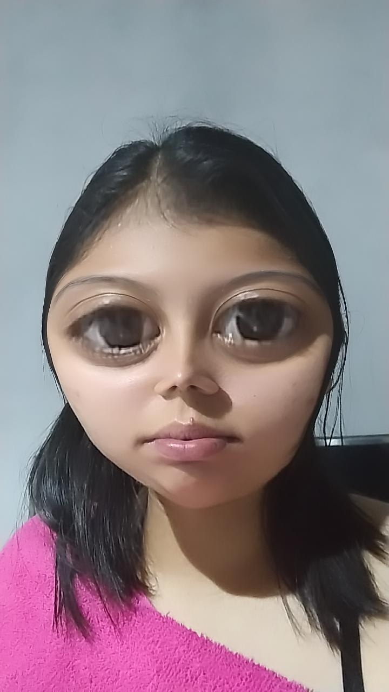

Bem-vinda
Você está pronta?
Antes de começar um pequeno teste para saber se você é digna:
Você conhece esta pessoa?
Tem certeza?
Olhe bem pra isso:
Espere...

É o amor minha vida que está acessando essa página agora?
Sim, Raelly com apenas dois L
Para que tudo dê certo, você precisa estar ouvindo a música de fundo.
Quando estiver ouvindo-a, clique no botão.
Bom, então vamos lá...
eu queria que você soubesse de algumas coisas.
Fiz esse presente para você.
As vezes é difícil imaginar...
que alguém pode aparecer do nada...
e transformar completamente...
a nossa perspectiva de vida.
Assim como você fez com a minha.
eu gostaria te mostrar isso.
"posso?"
1. Mensagens

Em tantos anos eu nunca senti tanto interesse em uma pessoa.
E quando digo interesse, é a vontade de conhecer, conversar e me envolver nos seus assuntos.
Conversas que demoram 15 minutos para serem lidas e mais de meia hora para serem respondidas.

110 mensagens é um conteúdo escrito muito pequeno relacionado às milhares de coisas que ainda quero ler de você.
110 mensagens, colocadas em uma conversa real, está muito longe das milhões de palavras que ainda quero muito ouvir você falar.
2. Momentos marcantes
Essa é minha foto favorita sua.
Eu me apaixonei por você mais de uma vez.
Há pessoas nesse mundo que preferem a solidão, mas não há ninguém que suporta ela. Mesmo com as dificuldades eu quero estar ao seu lado Amar não é olhar um para o outro, é olhar juntos na mesma direção.parece clichê kkkk
Cada uma dessas situações foi quando me descobri apaixonado por você, e vou te contar quais foram:
- A primeira vez foi na na escola Estudavamos na mesma sala, eu encostei minha mão no encosto apoiando meu rosto e fazendo um sorriso completamente besta, enquanto você falava. Naquele momento, eu não estava ouvindo nenhuma palavra sua, apenas pensando "Cara, ela é demais!". Esse foi o primeiro momento que me apaixonei por você.
- Quando saímos pela primeira vez, me lembro perfeitamente: eu estava parado na frente da igreja, esperando você. Eu não consigo explicar o que senti quando vi você chegando, era como se o tempo tivesse parado ali. Foi quando vi você pela primeira vez com o seu belo sorriso, e nesse momento eu já sabia que estava apaixonado pela segunda vez.
- A terceira vez foi nesse ano mesmo, era quase uma hora da tarde e você me mandou uma mensagem perguntando se eu queria trabalhar, logo em seguida a empresa que você trabalha entrou em contato comigo, em seguida a gente voltou a conversar, no dia seguinte eu não parava de pensar em você, foi nesse momento que eu percebi que estava mais uma vez apaixonadopor você. /li>
E esse é só o começo.
O nosso começo.
3. O que você mudou em mim
Essa foto eu irei guardar para sempre, eu acho ela engraçada :)
O que isso tem a ver, você se perguntaria? - absolutamente nada kkkk
Mas falando serio, antes de começarmos a conversar novamente, eu estava há tempos sem ânimo, completamente parado.
Essa motivação de estar voltando com tudo de uma vez, está completamente relacionada ao que você causou em mim.
Para mim, estava fora de cogitação voltar a ser feliz ou tentar algo novo
O que eu irei fazer? Não tenho motivação, não tenho nada nessa cidade.
Pelo menos antes de você.
Você quem me fez querer conquistar o mundo e ser feliz novamente.
Você quem me fez querer voltar a fazer atividades físicas, para me manter saudável e a boa aparência para você.
As vezes me pego pensando no que teria acontecido se eu não tivesse você.
Estaria morando em outro lugar, ficando o dia todo em casa sem inspiração nenhuma para querer voltar a manter uma rotina saudável, e procurando pessoas vazias pelo caminho da vida, para continuar tendo uma vida vazia com outras pessoas vazias.
Você me faz bem, então me responda mais em baixo
Obrigado por estar comigo.